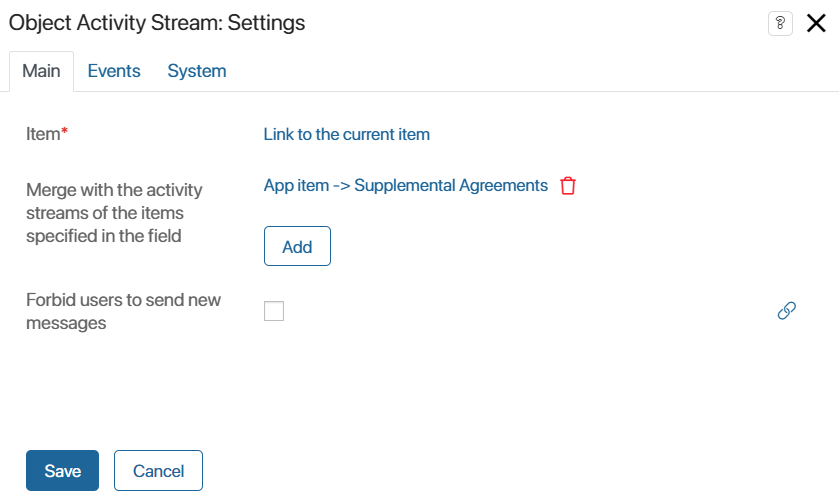
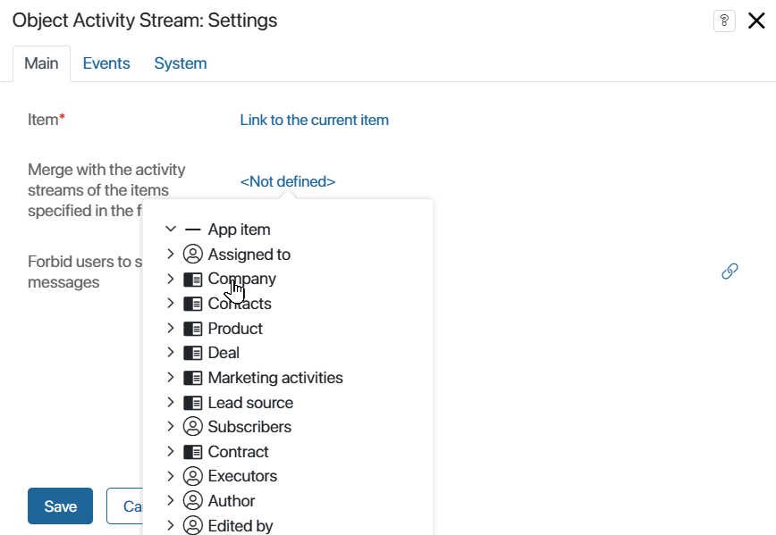
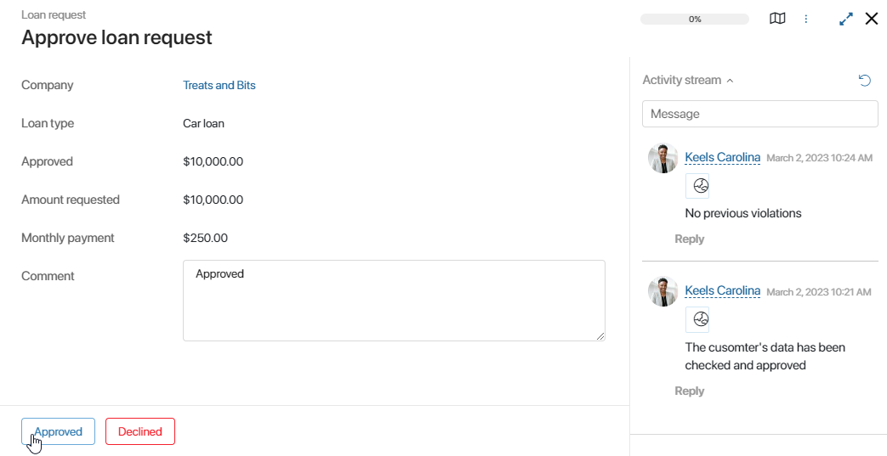
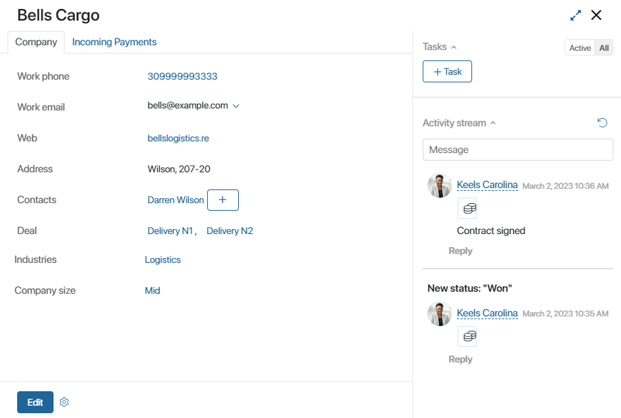
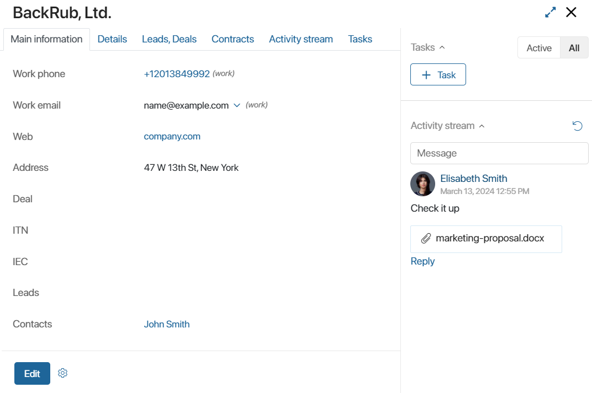

The Object Activity Stream widget adds an associated activity stream to the form and displays user conversations related to a task, app item, or business process.
If you’re configuring the form of an object associated with an app, you can display messages for items of that app in the widget. For example, in the activity stream of a service contract, you can also show correspondence and notifications for related requests and work reports. In this way, you can display messages from any number of activity streams for different objects.
To configure the widget, drag it to the canvas from the right pane of the interface designer or click +Widget. Fill out the settings in the pop-up.
Main tab

- Item*. By default, the field specifies the object you are working with: an app item or a process task. The widget will display the associated activity stream.
If the item’s context contains a property of the Arbitrary App type, you can display the activity streams of the items specified in that property. To do that, click on the Link to the current item value and select the app from the list.
- Merge with activity streams of the items specified in the field. To display the activity stream of a different item, click <Not defined> and select the app from the list. To specify more than one item, click Add.
You can combine activity streams only of associated items. To associate one item with another, add an App type field to the context of the current app or business process. To learn more, see Create an app item on the page of another app.
- Forbid users to send new messages. Hide the field for entering messages in the activity stream. You will still be able to comment on system alerts and messages from users that were left before the option was enabled.
The message entry field can be displayed depending on a certain value of a context variable. To do this, click the icon next to the option. Then specify a variable of the Yes/No switch type from the item context on whose form the activity stream is being configured. For more information on how to configure the widget visibility, see the System widget settings article.
Events and System tabs
The Events and System tabs are for system settings that are the same for all the widgets. They allow you to configure a widget’s visibility and access to its data, define what happens, when the user moves or hovers the pointer over the widget, etc. Find out more in System widget settings.
To complete the settings, click Save. To make the changes available to users, click Save and Publish in the top toolbar.
Use cases
Display app item activity stream in a business process task
Let’s say you need to implement the following logic: the associated stream of the Approve request task that belongs to the Loan request process displays information from the activity stream of the Company app item that stores the client’s info.
To bind these activity streams, go to the form template of the business process task. Open the settings of the Object Activity Stream widget and select the Company app in the Merge with activity streams of the items specified in the field field.

After the settings are saved, the loan request approval task will show the client’s activity stream, for example, with comments of other employees.

Please note that in process settings, on the Associated activity stream tab, you can enable the Associated activity stream of an app or file option. If it is enabled, the activity stream of the app item stored in the selected variable will be displayed on all the process tasks. To learn more, see Settings tab. If you have specified another app on the form template of a certain task, the activity streams of both apps will be combined on the task page.
Display activity stream of one app item on the page of another app item
You can bind the associated streams of different apps.
Example 1
Let’s display the activity stream of the Deals app on the page of a Company app item it is bound to.
Open form settings of the Companies app and open the view form in interface designer. In the settings of the Object Activity Stream widget, in Merge with activity streams of the items specified in the field select the Deals app.
After saving the settings, the company’s activity stream will display the activity streams of all the deals bound to this company.

Example 2
Let’s see how to use the widget to display an item’s activity stream from an Arbitrary App field.
Suppose you added an Arbitrary App field to the form of the Companies app, where users specify a contract from the Files workspace. Let’s display the information from the activity stream of the selected contract on the page of a company.
Open the Companies app form settings and go to the view form in interface designer. In the settings of the Object Activity Stream widget, in the Link to the current item field specify the Arbitrary App variable.
Save the changes. Now, the activity stream of the created company will also display entries from the activity stream of the selected contract.

Found a typo? Select it and press Ctrl+Enter to send us feedback